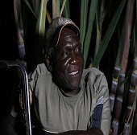

The baby stages of AFFAC. The Facebook page created with an aim to bring together farmers. Many farming ideas and issues shared and solutions discussed by members
about us
Welcome To AFFAC
Africa farmers club (AFFAC) is a community of farmers.
Tethered on the firm believe that an informed farmer will always make the right decision which have ripple effect in the whole value chain,the community aims to plan and support initiatives which promote farmer entrepreneurship skills through knowledge growth. Our membership,across 6 african countries is composed of individuals drawn from private sector, public sector and farmer based institutions, brought together through our online platform activities,as well as our offline farmer focused activities.AFFAC promotes knowledge sharing amongst the value chain players for the benefit of all, but most importantly, the farmer.
our history
Many farmers in Kenya join the group. By the end of the year, farmers and experts from more than 20 African countries are part of the group and share their success and failure stories.
Project moving the farming group from online to offline. Meeting with farmers physically through farm trainings and farm visits.
Facebook Award Won. Increased activity in the group. New rules to ensure group discipline drafted, many more events planned and executed. New Website building....
jobs
Internship & Employment Opportunities
Become part of the team collaborating to responsibly link and share practical agricultural information to have the farmer attain knowledge and grow profits in a sharing and caring environment.Join us at AFFAC as we work towards Food security,food safety and sustainable production.
meet our team
Patricia Kombo
A firm believer in the ability of africa feeding the world,her mastery of the swahili language and the passion to amplify the stories of the africa farmers through writing makes patricia an outstanding journalist in the agricultural industry.Patricia features the Sauti ya mkulima program on AFFAC tv.
Peter Magoma
A dedicated photographer,videographer and video editor,Peter is a keen to detail team member.His grasp of the developments in the industy informs him on where,when and what to focus his lenses in the quest to tell the story of the african farmer.
Lorgisa Rose
Rose is Passionate about agriculture and continues to use her vast experience in dealing with farmers to make their voices heard.Her focus on youth empowerment in agriculture and the reduction of depresion amongst the population injects an admirable social angle into her personality as a journalist
Noah Nasiali
A farmer,trainer and mentor;Noah leads the AFFAC community. His passion in agriculture and the desire to see the success of farmers in africa is unmatched.
advantages
- Access to discounted agroinputs from partnering outlets. A sure deal to better produce.
- Access to E-learning materials. Continous access to reading materials and self development for better farming.
- Unlimited guided access to AFFAC satelite farms across the country,A easy way to learn practical farming skills and network.
- Consideration for discounted events offers where specific fees applies. Almost free access to training and guidance.
purposes
-
Goal:
To bring the African Farmers together to amplify the voice of the farmer.Highlighted by our works , mission and vision, AFFAC is a gem to dig for.
-
Mission:
To grow the farmer knowledge on the production journey ,equip the farmer with the ability to plan on the journey towards profitability. -
Vision:
To have the farming community collaborate and share practical information using technological advancements,in an environment that upholds the community virtues
testimonial
Charles Osawa,
"Disability is not inability. AFFAC doesn't discriminate anyone. It's inclusive of everyone"
Farmer
Milly Ngeny,
"Gender equality is possible. Women can also rock in Green house farming."
farmer
Kathurima Timothy,
"Succeeding in farming accross borders. Getting it in grandiose amounts from abroad."
farmer